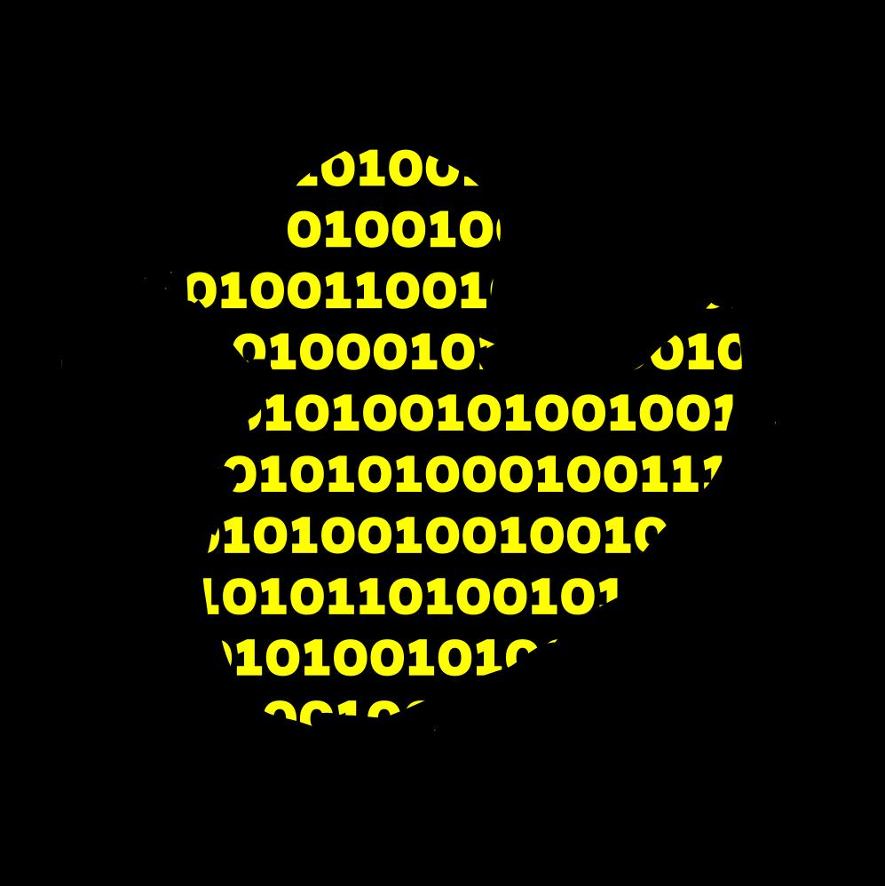

Imperial Coding Society
March 2023
My journey of founding a new society at Imperial College.
Motivation :
- Computing society, which already existed, did not do any coding or problem solving.
- I was a part of PLUS group which is an informal meeting where students can come and talk to each other and to some of the staff about recreational mathematics puzzles run by Prof F. Berkshire, K. Buzzard, D. Crisan.
- Wanted a similar thing for coding problems (Leetcode style).
- Also wanted to be more extroverted.
- Decided to found one on my own.
How it went :
- 3 co-founders and 20 members were needed for applying to the Union.
- Convinced 2 friends to be the co-founder and several others to be the member but it was less than 20.
- Made a poster to gather more members and spread it in the campus.
- 37 people signed up.
- Application got rejected because it could be part of the Computing Society.
- Spoke to a Computing Soc committee, they said the Computing Soc was mainly for networking and people were not willing to do extra coding outside their course.
- Decided to hold meetings anyway informally as an unofficial society.
- Questions were mainly about dynamic programming and graph theory just because I found them fun.
First Meeting :
- Date: June 14th, 2023
- Time: 6:00 PM to 7:00 PM
- Location: Blackett 1004
- Questions:
- Height of a Binary Tree
- Fibonacci
- 7 people attended
- Discussed the time complexity of fibonacci, comparing the iterative approach and the memoization approach.
Poster :

The binary code translates to "was it fun" with ASCII encoding.
Logo :

I manually drew the rubber duck which symbolises decoding.
Application form (rejected) :
>pdf file